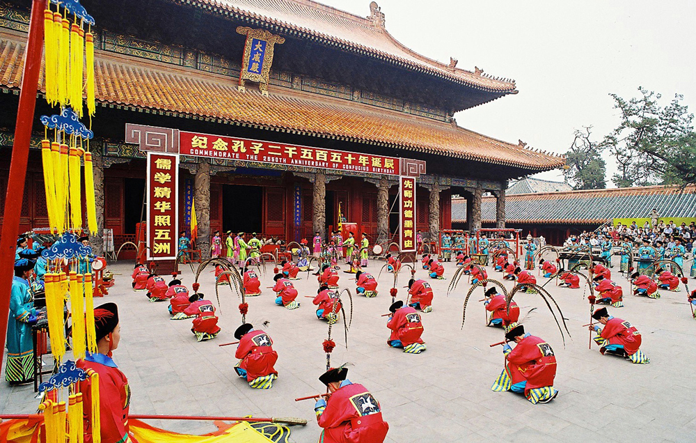
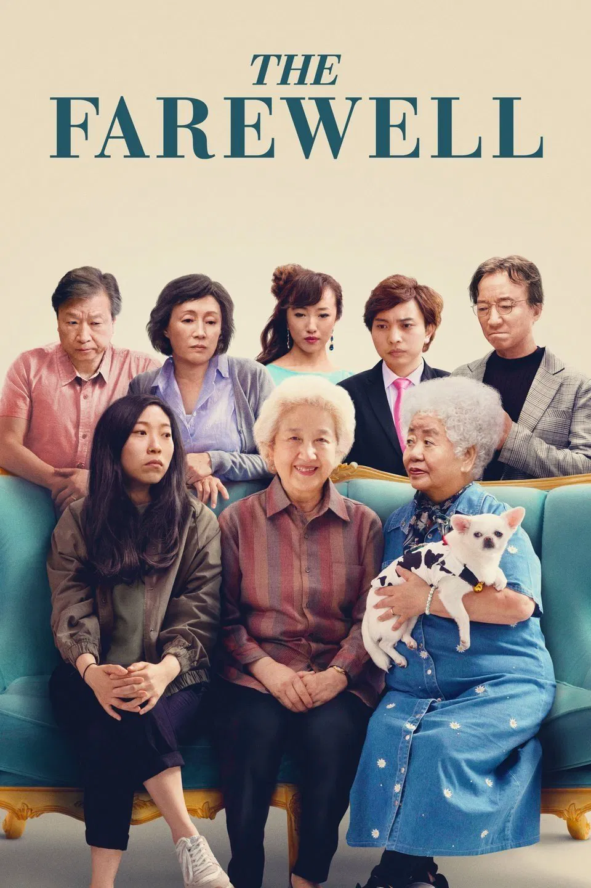

Confucian-influenced films often explore family relationships, ritual, and moral duty. Rather than focusing on the supernatural, they highlight harmony, respect for elders, responsibility within social roles, and the tension between personal desire and familial obligation. These stories invite viewers to reflect on what it means to live well with others in community.

The Farewell reflects Confucian values of filial piety and family loyalty. The film centers on a granddaughter torn between Western ideals of individual honesty and a Confucian-influenced tradition that protects the grandmother from painful news. Its quiet, domestic scenes highlight ritual meals, generational tension, and the complex love that binds an extended family together.